バイト中か:
Wave:
残り時間:
納品数:
ノルマ:
1番目のイカ:
2番目のイカ:
3番目のイカ:
4番目のイカ:
スペシャル:
スペシャル残り:
映像入力デバイス:
コントラスト:
音声入力デバイス:
読み上げ音量:
テスト
デバッグモード:
当ツール「Salmonitor - サーモニター」は、PCに接続された映像入力デバイスからサーモンランのプレイ映像を取得し、
各種情報を認識して味方が死んだりノルマが達成されたりしたことを読み上げてくれるツールです。
タブが非アクティブの場合、映像の認識にタイムラグが生じます。ご注意ください。
作者は動作確認時の映像入力デバイスに「Live Gamer Portable 2」を使用しています。
その他の映像入力デバイスでは、認識の精度が著しく落ちる可能性が考えられます。
コントラスト調整は見た目を変えるだけのもので、認識の精度には影響がありません。
英語版のSplatoon2では、文字の形状や配置の違いから、一部の情報を認識できません。
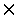 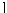 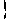 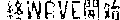 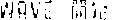 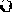 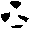 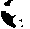 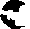 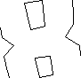 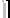 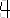
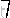
 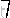
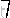